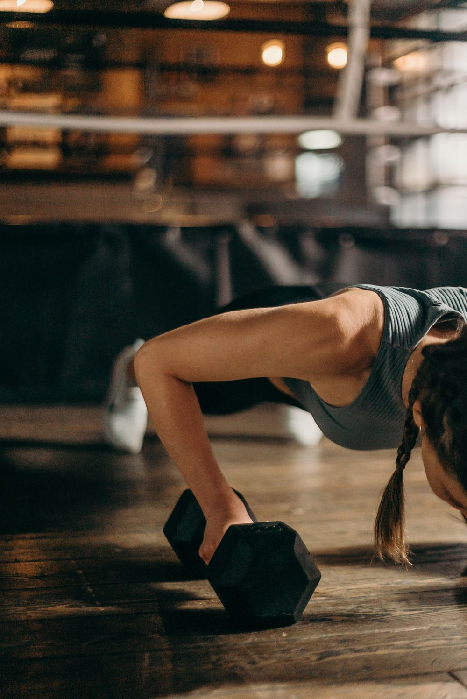

Push-Up
- Set your hands slightly wider than your shoulders, body in one straight line from head to heels.
- Lower until your chest is a fist's height from the floor, elbows angled back at about 45 degrees.
- Press back up without letting your hips sag or pike upward.
Taking it further
- Intermediate Once fifteen clean reps feel easy, do not just add reps — slow the lowering to a three-count and pause an inch off the floor.
- Advanced Add load: feet on a bench, or a plate on your upper back, going up in the smallest increment you have. Deficit push-ups off dumbbells buy you extra range.